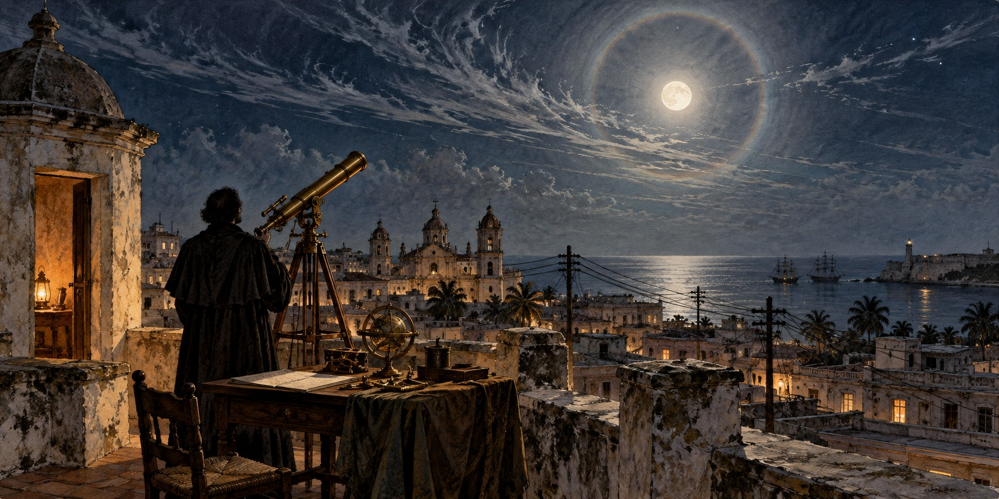

Hurricane Warnings Before Radio
From a Cuban Observatory to Telegraph Networks and Coastal Storm Flags

Before radio broadcasts or satellites, hurricane warnings depended on observations that could be passed from person to person. In nineteenth-century Cuba, Father Benito Viñes combined careful study of clouds and ocean swells with reports sent through telegraph and cable networks. Florida’s warning history belongs to that wider Caribbean story.
A Priest Who Became the Expert
Benito Viñes, a Spanish-born Jesuit, arrived at Havana’s Colegio de Belén in March 1870 to direct its small meteorological observatory. Within eight months a severe hurricane tore the roof from the observatory’s third-story room. Viñes rebuilt and expanded the facility and organized systematic observations, supplemented by reports from other observers and records of past storms.
By 1875 he had identified a specific signal: the behavior of cirrostratus clouds, observed alongside ocean swell, could reveal an approaching hurricane before any other sign. His first published forecast appeared in a Havana newspaper on September 11, 1875, warning correctly that a hurricane would strike Cuba’s southern coast within two days. Cooperation followed fame.
An Instrument and a Network
Viñes organized volunteer observers across Cuba, connected by telegraph, and exchanged observations with other Caribbean weather services through undersea cable. Reports from different places helped him judge both whether a hurricane existed and how it might be moving. The network mattered as much as any single instrument.
He also developed the Antilles cyclonoscope, a slide-rule-like instrument that let a trained observer estimate a hurricane’s position and likely path from cloud and wind observations. His innovation was not just saying a hurricane was coming, but estimating where it was going.
Florida’s Flags
The United States built a simpler system in response to public dissatisfaction with the Army Signal Corps’ handling of a destructive 1875 hurricane. A pair of red flags, ten feet by eight feet, each with a black square, were hoisted at coastal ports beginning October 1, 1875, and lit at night. For decades, the flag plus scattered telegraph and newspaper reports was the entire formal warning system for American coastal residents. The civilian U.S. Weather Bureau was authorized in 1890 and began operations on July 1, 1891, succeeding the Army Signal Service.
Rivalry and Information Sharing
Willis Luther Moore became chief of the Weather Bureau in 1895. Later historians, including Erik Larson in Isaac’s Storm, criticized the professional rivalry and centralized decision-making that separated Cuban and U.S. forecasters. These accounts raise questions about the quality and sharing of information in 1900. The specific telegram restrictions and their effect on the death toll require careful source evaluation.
What Cuba Knew
In early September 1900, Belén’s observers, continuing Viñes’s methods, tracked a storm across Hispaniola and the Windward Passage and concluded it would cross the Gulf toward Texas. The Bureau’s Washington office, without that analysis, predicted a curve north over Florida and up the Atlantic coast, a forecast MIT’s Kerry Emanuel called “way off target.” Storm warnings went up for Florida from Cedar Key to Miami on September 5, and a hurricane warning from Cedar Key to Savannah the next day, aimed at the wrong coast while the storm moved on toward Texas.
Galveston
The storm struck Galveston on September 8, 1900, killing an estimated 6,000 to 12,000 people, the deadliest natural disaster in U.S. history. Erik Larson, in Isaac’s Storm, wrote that Moore’s “passion for control had gouged a deep chasm between Cuban and U.S. meteorologists.” Larson and others argue that professional rivalry and prejudice against Cuban forecasters shaped the policy, and that better information sharing could have saved lives; how many, and how decisive the Cuban warning would have been, remain matters of historical judgment.
A Network That Outlasted Its Critics
Viñes died in 1893, having earned the nickname “Padre Huracán.” His distributed, telegraph-linked approach outlived the attempt to discredit it. The regional hurricane warning system the United States adopted in 1935, with offices in Jacksonville, Washington, San Juan and New Orleans, traces its conceptual lineage to the network Viñes built more than half a century earlier.
Quick Facts
| Father Benito Viñes | Spanish Jesuit; directed Belén Observatory, Havana, from 1870; died 1893 |
|---|---|
| First published forecast | September 11, 1875, Havana newspaper |
| Antilles cyclonoscope | Slide-rule-like instrument to estimate a hurricane’s position and track |
| U.S. warning flags | Red flags with black squares, from October 1, 1875 |
| U.S. Weather Bureau | Authorized 1890; operations began July 1, 1891 |
| 1900 policy | Historians criticize rivalry and poor information sharing |
| Galveston hurricane | September 8, 1900; 6,000 to 12,000 deaths |
| 1935 | U.S. regional warning system with offices in Jacksonville, Washington, San Juan, New Orleans |
Did You Know?
Viñes was called “Padre Huracán,” the Hurricane Priest.
The Weather Bureau forecast the 1900 storm to curve toward Florida; it went to Texas.
Vocabulary
Cirrostratus: a high, thin layer of ice-crystal cloud that often produces a halo around the sun or moon.
Cyclonoscope: Viñes’s instrument for estimating a hurricane’s position and path.
Weather Bureau: the U.S. federal weather agency authorized in 1890 and operating from 1891; the ancestor of today’s National Weather Service.
Discussion Questions
What practical advantages did Viñes’s network have over the 1875 U.S. flag system?
How should historians weigh Larson’s judgment that Moore’s policy cost lives?
Related Articles
FLH-0020 — How Florida Pioneers Predicted Storms
FLH-0016 — How Hurricane Forecasting Changed Florida
FLH-0003 — The Great Miami Hurricane of 1926
FLH-0004 — The Okeechobee Hurricane of 1928
Sources
Wikipedia. “History of Atlantic Hurricane Warnings” and “1900 Galveston Hurricane.”
NOAA AOML. “140th Anniversary of First Hurricane Forecast.” aoml.noaa.gov
The Irish Times. “The ‘Hurricane Priest’ of Cuba.” irishtimes.com
Jesuit Online Bibliography, Boston College. “Father Benito Viñes.” jesuitonlinebibliography.bc.edu
HistoryNet. “Blown Away: Galveston Hurricane, 1900.” historynet.com
HISTORY.com. “Hurricane Science: Key Advances in Tracking Deadly Storms.” history.com
Larson, Erik. Isaac’s Storm: A Man, a Time, and the Deadliest Hurricane in History. 1999.
Econlib. “Lessons from Isaac’s Storm.” econlib.org